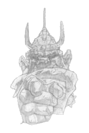

|
|
DétritusDétritus | |
Un troll. Peut être même Le troll. C'est l'archétype du troll, celui qui vient à l'esprit de toute personne, et surtout les étudiants de l'Université, entendant le mot et qui leur remet subitement en mémoire des souvenirs de commotions soudaines et autres douleurs extrêmes. Il est immense, ou plutôt, il est montagneux (étant un troll, ça s'impose à l'esprit) et il présente, dit-on, un cerveau de la taille d'une noix. Ainsi que la plupart de ses congénères, ses phalanges touchent le sol lorsqu'il se déplace. Quand il ne réalise pas un travaille qui exige le port d'un uniforme, il porte un pagne en lambeaux qui sert à voiler ce qu'un troll estime nécessaire de dissimuler. Totalement dépourvu d'une quelconque autre spécialisation à part son état montagneux de toit d'Ankh-Morpork et considérant même le travail non spécialisé comme éprouvant pour l'esprit, il loue ses services à toute personne ayant besoin d'un poing à gage.  On le découvre pour la première fois comme éjecteur (c'est la même chose que videur mes les trolls y mettent davantage de vigueur) au Tambour Rafistolé à Ankh-Morpork mais sa carrière évoluera plus tard pour le propulser cogneur dans l'industrie des images animées à Olive-Oued, où il fera de plus la connaissance de Rubis, une chanteuse de cabaret. C'est d'ailleurs après cette rencontre et sûrement sous l'influence de la belle qu'il réévaluera ses options de carrière et s'engagera dans le Guet municipal. Il n'est pas vraiment méchant mes tout comme la plupart de ses congénères établis à Ankh-Morpork, il s'efforce de ressembler aux humains, ce qui ne va pas sans certaines contrariétés pour la société... Détritus réfléchit dans : Au guet !, Les zinzins d'Olive-Oued, Le guet des orfèvres, Mascarade, Pieds d'Argile, Va-t-en-guerre. |